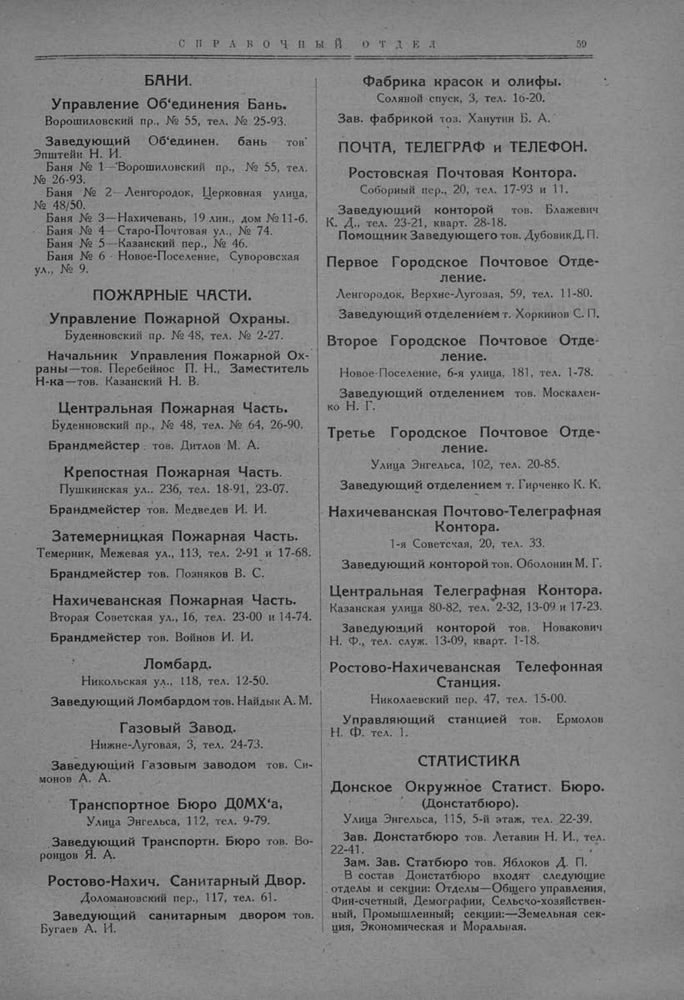

Лист источника 109
Скан

Распознанный текст
СПРАВОЧНЫЙ ОТДЕЛ 59
БАНИ.
Управление Объединения Бань.
Ворошиловский пр., № 55, тел. № 25-93.
Заведующий Объединен. бань тов
Эпштейн Н. И.
Баня № 1—Ворошиловский пр., № 55, тел.
№ 26-93.
Баня № 2—Ленгородок, Церковная улица,
№ 48/50.
Баня № 3—Нахичевань, 19 лин., дом № 11-б.
Баня № 4—Старо-Почтовая ул., № 74.
Баня № 5—Казанский пер., № 46.
Баня № 6—Новое-Поселение, Суворовская
ул., № 9.
ПОЖАРНЫЕ ЧАСТИ.
Управление Пожарной Охраны.
Буденновский пр. № 48, тел. № 2-27.
Начальник Управления Пожарной Ох-
раны—тов. Перебейнос П. Н., Заместитель
Н-ка—тов. Казанский Н. В.
Центральная Пожарная Часть.
Буденновский пр., № 48, тел. № 64, 26-90.
Брандмейстер тов. Дитлов М. А.
Крепостная Пожарная Часть.
Пушкинская ул., 236, тел. 18-91, 23-07.
Брандмейстер тов. Медведев И. И.
Затемерницкая Пожарная Часть.
Темерник, Межевая ул., 113, тел. 2-91 и 17-68.
Брандмейстер тов. Позняков В. С.
Нахичеванская Пожарная Часть.
Вторая Советская ул., 16, тел. 23-00 и 14-74.
Брандмейстер тов. Войнов И. И.
Ломбард.
Никольская ул., 118, тел. 12-50.
Заведующий Ломбардом тов. Найдык А. М.
Газовый Завод.
Нижне-Луговая, 3, тел. 24-73.
Заведующий Газовым заводом тов. Си-
монов А. А.
Транспортное Бюро ДОМХ'а,
Улица Энгельса, 112, тел. 9-79.
Заведующий Транспортн. Бюро тов. Во-
ронцов Я. А.
Ростово-Нахич. Санитарный Двор.
Доломановский пер., 117, тел. 61.
Заведующий санитарным двором тов.
Бугаев А. И.
Фабрика красок и олифы.
Соляной спуск, 3, тел. 16-20.
Зав. фабрикой тоз. Ханутин Б. А.
ПОЧТА, ТЕЛЕГРАФ и ТЕЛЕФОН.
Ростовская Почтовая Контора.
Соборный пер., 20, тел. 17-93 и 11.
Заведующий конторой тов. Блажевич
К. Д., тел. 23-21, кварт. 28-18.
Помощник Заведующего тов. Дубовик Д. П.
Первое Городское Почтовое Отде-
ление.
Ленгородок, Верхне-Луговая, 59, тел. 11-80.
Заведующий отделением т. Хоркинов С. П.
Второе Городское Почтовое Отде-
ление.
Новое-Поселение, 6-я улица, 181, тел. 1-78.
Заведующий отделением тов. Москален-
ко Н. Г.
Третье Городское Почтовое Отде-
ление.
Улица Энгельса, 102, тел. 20-85.
Заведующий отделением т. Гирченко К. К.
Нахичеванская Почтово-Телеграфная
Контора.
1-я Советская, 20, тел. 33.
Заведующий конторой тов. Оболонин М. Г.
Центральная Телеграфная Контора.
Казанская улица 80-82, тел. 2-32, 13-09 и 17-23.
Заведующий конторой тов. Новакович
Н. Ф., тел. служ. 13-09, кварт. 1-18.
Ростово-Нахичеванская Телефонная
Станция.
Николаевский пер. 47, тел. 15-00.
Управляющий станцией тов. Ермолов
Н. Ф. тел. 1.
СТАТИСТИКА
Донское Окружное Статист. Бюро.
(Донстатбюро).
Улица Энгельса, 115, 5-й этаж, тел. 22-39.
Зав. Донстатбюро тов. Летавин Н. И., тел.
22-41.
Зам. Зав. Статбюро тов. Яблоков Д. П.
В состав Донстатбюро входят следующие
отделы и секции: Отделы—Общего управления,
Фин-счетный, Демографии, Сельско-хозяйствен-
ный, Промышленный; секции:—Земельная сек-
ция, Экономическая и Моральная.